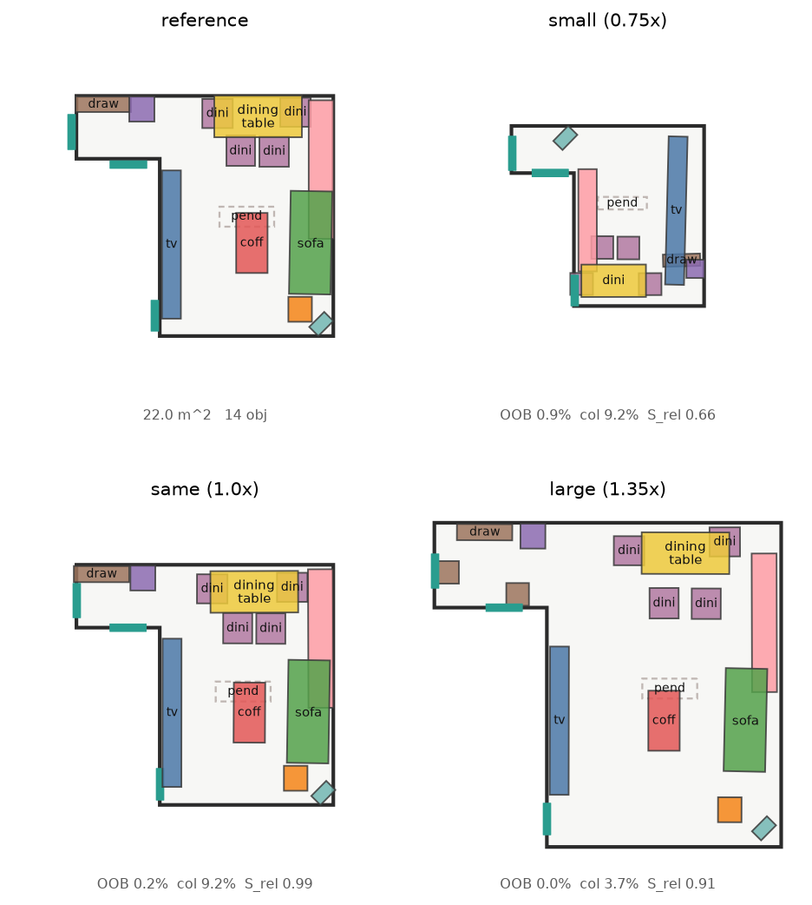

ReRoom · 最終做法
參考導向的 3D 室內設計 retargeting — 最終 shipped pipeline
問題:給一張使用者喜歡的房間設計 + 一個形狀 / 大小可能完全不同的目標房間,自動把設計搬過去 — 保留原本的關係與 motif,佈局符合新房間幾何。
Pipeline
- 意圖抽取:參考房影像 → MIDI-3D → 場景 + 物件圖 → 加上關係彈性 αij(神經 MLP 學出來)
- Summarise & Substitution(§9 § 11):房間變小先刪 motif,再從 asset bank 換成塞得下的較小家具(在 flow 之前,避免硬塞被 collision 推散)
- Flow Transformer(§13 前半):DiT 33 M 參數,意圖圖 + α 進 attention bias,ODE 50 步生成 k=16 個候選佈局。In-sampling guidance:每步都算 Ebound + Ecol + Eclear + wall_pull 的可行性梯度,融進 ODE trajectory
- Polish(§13 eq (37) 後半):每個候選跑 25 步 Adam,對 § 8 六個能量做梯度下降,freeze_yaw(朝向由 flow 決定),疊四個機制:
- ① 異方性 anchor:tangent 100 + normal 單向(只懲罰往房間中心飄)
- ② 親子相對 anchor:motif child 對齊「相對 parent 偏移」,parent 動則整組跟
- ③ Phase 1(前 12 步):E_col × 0.15、tangent × 0.10 → wall 物件斜滑到牆
- ④ Phase 2(後 13 步):恢復全能量 → 消碰撞、貼合
- Population(§10):房間變大時依 co-occurrence 新增家具,守門要求「加入後成本不變」
- Ranking:全 7 個 §8 能量算 E(Y),k 個候選挑最佳
實際輸出

同一份 22 m² L 形客廳 reference(左上),分別放入 0.75× / 1.0× / 1.35× 房間 — 現行 shipped pipeline。
6 場景平均實測
| Size | mean float | max float | OOB % | col % | Srel |
|---|
| 0.75× 縮小 | 6.5 cm | 24.6 cm | 2.1 % | 2.6 % | 0.42 |
| 1.00× 原尺寸 | 12.0 cm | 55.9 cm | 0.9 % | 4.8 % | 0.93 |
| 1.35× 放大 | 22.2 cm | 102.5 cm | 0.8 % | 2.3 % | 0.87 |
剩餘瓶頸
1.35× 放大房 sofa 卡在 30 cm 左右(見圖右下)— 這是多能量拔河的均衡點:
- E_col:coffee_table / side_table 反向排斥,把 sofa 頂在半空
- E_rel:reference 的 sofa-table 相對距離拉大 → 反向力
- Anchor tangent 100 限制切向 → 阻擋斜向 wall 位移
- Adam 25 步預算不夠走完 30 cm 位移
純推理層已到 ceiling。要繼續突破需從 scratch 重訓 + 補「大房專業配置」GT(3D-FRONT 分布裡這類樣本只佔 1.6-1.8 %)。